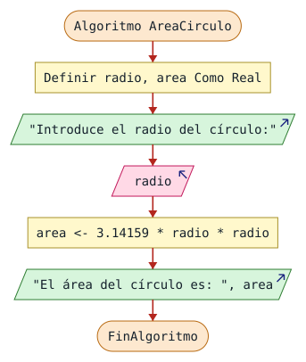
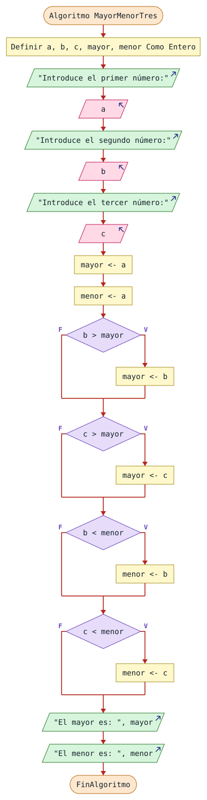
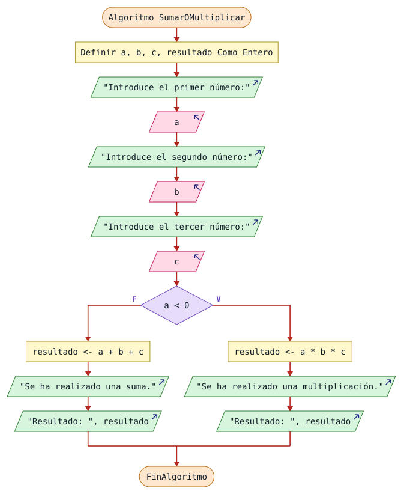
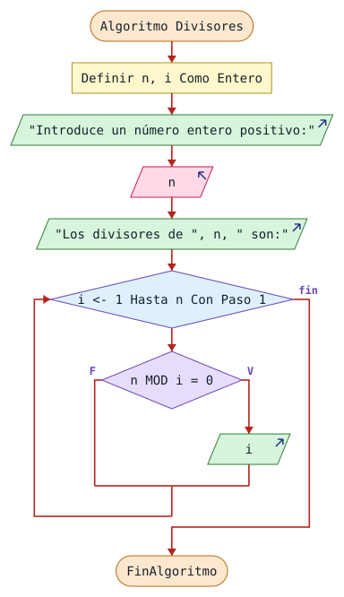

Colección de ejercicios progresivos de diagramas de flujo y pseudocódigo para estudiantes de programación. Cada ejercicio está diseñado para consolidar conceptos clave: entrada/salida, condiciones, ciclos, cadenas y razonamiento algorítmico. Nivel principiante → intermedio.
Esta batería de ejercicios está pensada para trabajarse de forma progresiva, combinando ejercicios que se resuelven mediante diagrama de flujo y otros mediante pseudocódigo. La dificultad aumenta gradualmente, y algunos ejercicios están pensados para resolverse con la guía del profesor antes de que los alumnos los completen de forma autónoma.
Diseña un diagrama de flujo que calcule el área de un círculo a partir de su radio. El programa debe solicitar al usuario un valor para el radio, calcular el área utilizando la fórmula correspondiente y mostrar el resultado por pantalla.
Fórmula: Área = π · radio²
Este ejercicio pone en práctica la estructura básica de todo algoritmo: entrada → proceso → salida. No introduce estructuras de control nuevas, por lo que el objetivo principal es aprender a traducir un problema matemático sencillo en pasos algorítmicos claros y ordenados.
Datos del problema
Estructura esperada: Inicio → Leer radio → Calcular área → Mostrar área → Fin.
Recuerda que π es una constante. Puedes usar el valor 3.14159 o la constante predefinida de tu entorno.
Se pide el radio y se calcula el área con la constante escrita a mano. Es el flujo mínimo de todo algoritmo: leer un dato, calcularlo en una sola asignación y escribir el resultado.

El mismo algoritmo en PSeInt
Algoritmo AreaCirculo
Definir radio, area Como Real;
Escribir "Introduce el radio del círculo:";
Leer radio;
area <- 3.14159 * radio * radio;
Escribir "El área del círculo es: ", area;
FinAlgoritmoAlgoritmo AreaCirculoEmpieza el programa y le da el nombre AreaCirculo. Todo lo que hay hasta FinAlgoritmo pertenece a él.Definir radio, area Como Real;Declara radio, area como variables de tipo Real (número con decimales).Escribir "Introduce el radio del círculo:";
Leer radio;Muestra el mensaje «Introduce el radio del círculo:». Después, Leer radio; guarda lo que escriba el usuario en radio.area <- 3.14159 * radio * radio;Aplica Área = π · r². Se multiplica el radio por sí mismo y 3.14159 hace de π. Todo ocurre en una sola asignación: primero se calcula la parte derecha y luego se guarda en area.Escribir "El área del círculo es: ", area;Muestra «El área del círculo es: » y luego el valor de area, todo seguido en la misma línea.FinAlgoritmoFin del programa.Pruébalo con valores concretos.
Si el usuario escribe: 2 El programa muestra: Introduce el radio del círculo: El área del círculo es: 12.56636
Si el usuario escribe: 10 El programa muestra: Introduce el radio del círculo: El área del círculo es: 314.159
Ojo. Se declaran como Real porque un radio como 2,5 se perdería si fuera Entero.
Escribe un pseudocódigo que calcule el Índice de Masa Corporal (IMC) de una persona a partir de su peso en kilogramos y su altura en metros. El programa debe mostrar el valor del IMC calculado con el formato adecuado.
Este ejercicio es deliberadamente más sencillo que los anteriores. Después de trabajar con condiciones y ciclos, resulta beneficioso volver a un ejercicio de cálculo directo para afianzar el manejo de variables, tipos de datos, entrada de datos por teclado, aplicación de una fórmula y presentación del resultado. No todos los ejercicios tienen que ser progresivamente más difíciles.
Fórmula del IMC: IMC = peso / altura²
Datos del problema
Variables necesarias: peso: real; altura: real; imc: real.
Aspectos a tener en cuenta
Se piden peso y altura y se aplica IMC = peso / altura². Es un ejercicio de cálculo con variables reales; la validación de la altura cero queda para más adelante, cuando aparezca el Repetir.
Algoritmo CalcularIMC
Definir peso, altura, imc Como Real;
Escribir "Introduce tu peso en kilogramos:";
Leer peso;
Escribir "Introduce tu altura en metros:";
Leer altura;
imc <- peso / (altura * altura);
Escribir "Tu IMC es: ", imc;
FinAlgoritmoAlgoritmo CalcularIMCEmpieza el programa y le da el nombre CalcularIMC. Todo lo que hay hasta FinAlgoritmo pertenece a él.Definir peso, altura, imc Como Real;Declara peso, altura, imc como variables de tipo Real (número con decimales).Escribir "Introduce tu peso en kilogramos:";
Leer peso;Muestra el mensaje «Introduce tu peso en kilogramos:». Después, Leer peso; guarda lo que escriba el usuario en peso.Escribir "Introduce tu altura en metros:";
Leer altura;Muestra el mensaje «Introduce tu altura en metros:». Después, Leer altura; guarda lo que escriba el usuario en altura.imc <- peso / (altura * altura);Los paréntesis son imprescindibles: sin ellos se calcularía (peso / altura) * altura, que no es el IMC. Primero se eleva al cuadrado la altura y después se divide el peso entre ese resultado.Escribir "Tu IMC es: ", imc;Muestra «Tu IMC es: » y luego el valor de imc, todo seguido en la misma línea.FinAlgoritmoFin del programa.Pruébalo con valores concretos.
Si el usuario escribe: 70, 1.75 El programa muestra: Introduce tu peso en kilogramos: Introduce tu altura en metros: Tu IMC es: 22.8571428571
Ojo. Con altura 0 el programa dividiría entre cero. Por ahora basta con saberlo; más adelante se evita validando con Repetir.
Diseña un diagrama de flujo que lea tres números enteros introducidos por el usuario y determine cuál es el mayor y cuál es el menor de los tres. El programa debe mostrar ambos resultados al finalizar.
Este ejercicio introduce por primera vez el razonamiento con condiciones. A diferencia de un cálculo directo, aquí el alumno debe decidir cómo estructurar las comparaciones para obtener tanto el mayor como el menor. No basta con leer y calcular: hay que decidir.
Requisitos del diagrama
Estructura de decisión esperada
Consideraciones
Se leen tres enteros y se muestran el mayor y el menor. Se arranca suponiendo que a es ambos y cada comparación corrige el supuesto; así el algoritmo también funciona con números repetidos.

El mismo algoritmo en PSeInt
Algoritmo MayorMenorTres
Definir a, b, c, mayor, menor Como Entero;
Escribir "Introduce el primer número:";
Leer a;
Escribir "Introduce el segundo número:";
Leer b;
Escribir "Introduce el tercer número:";
Leer c;
mayor <- a;
menor <- a;
Si b > mayor Entonces
mayor <- b;
FinSi
Si c > mayor Entonces
mayor <- c;
FinSi
Si b < menor Entonces
menor <- b;
FinSi
Si c < menor Entonces
menor <- c;
FinSi
Escribir "El mayor es: ", mayor;
Escribir "El menor es: ", menor;
FinAlgoritmoIdea clave. Se parte de una suposición («a es el mayor y el menor») y cada comparación la corrige si aparece un número mejor.
Algoritmo MayorMenorTresEmpieza el programa y le da el nombre MayorMenorTres. Todo lo que hay hasta FinAlgoritmo pertenece a él.Definir a, b, c, mayor, menor Como Entero;Declara a, b, c, mayor, menor como variables de tipo Entero (número entero).Escribir "Introduce el primer número:";
Leer a;Muestra el mensaje «Introduce el primer número:». Después, Leer a; guarda lo que escriba el usuario en a.Escribir "Introduce el segundo número:";
Leer b;Muestra el mensaje «Introduce el segundo número:». Después, Leer b; guarda lo que escriba el usuario en b.Escribir "Introduce el tercer número:";
Leer c;Muestra el mensaje «Introduce el tercer número:». Después, Leer c; guarda lo que escriba el usuario en c.mayor <- a;Suposición inicial: de momento el mayor es a.menor <- a;Y también el menor, porque aún no se ha comparado con nadie.Si b > mayor EntoncesSi b supera al mayor provisional, hay que corregirlo.mayor <- b;Ahora el mayor es b.Si c > mayor EntoncesLo mismo con c; compara con el mayor actual, que ya puede ser a o b.mayor <- c;El mayor pasa a ser c.Si b < menor EntoncesMisma idea para el menor: si b es más pequeño, corrige.menor <- b;El menor pasa a ser b.Si c < menor EntoncesY con c.menor <- c;El menor pasa a ser c.Escribir "El mayor es: ", mayor;Muestra «El mayor es: » y luego el valor de mayor, todo seguido en la misma línea.Escribir "El menor es: ", menor;Muestra «El menor es: » y luego el valor de menor, todo seguido en la misma línea.FinAlgoritmoFin del programa.Pruébalo con valores concretos.
Si el usuario escribe: 4, 9, 2 El programa muestra: Introduce el primer número: Introduce el segundo número: Introduce el tercer número: El mayor es: 9 El menor es: 2
Si el usuario escribe: 5, 5, 5 El programa muestra: Introduce el primer número: Introduce el segundo número: Introduce el tercer número: El mayor es: 5 El menor es: 5
Ojo. Con los tres iguales ninguna comparación cambia nada y el resultado sigue siendo correcto. Por eso se usan > y < y no hace falta ningún caso especial.
Diseña un diagrama de flujo que lea tres números enteros a, b y c. Si el primer número (a) es negativo, el programa debe calcular y mostrar el producto de los tres. Si a es cero o positivo, debe calcular y mostrar la suma de los tres.
Este ejercicio tiene como objetivo comprobar que el alumno sabe traducir una condición lógica en una bifurcación real dentro de un diagrama. No es un problema matemáticamente complejo, pero requiere identificar con precisión la condición que determina qué camino tomar y representarla correctamente como una decisión con dos ramas.
Especificación completa
Esquema: LEER A, B, C → ¿A < 0? → MULTIPLICAR (calcular y mostrar producto) o SUMAR (calcular y mostrar suma).
Reflexión. ¿Qué ocurre exactamente cuando a = 0? ¿La suma y el producto coinciden en algún caso especial? Piénsalo antes de dibujar el diagrama.
Se leen tres números: si el primero es negativo se multiplican los tres, en caso contrario se suman. El criterio está solo en a, no en los tres valores, y el Si-SiNo resuelve las dos ramas.

El mismo algoritmo en PSeInt
Algoritmo SumarOMultiplicar
Definir a, b, c, resultado Como Entero;
Escribir "Introduce el primer número:";
Leer a;
Escribir "Introduce el segundo número:";
Leer b;
Escribir "Introduce el tercer número:";
Leer c;
Si a < 0 Entonces
resultado <- a * b * c;
Escribir "Se ha realizado una multiplicación.";
Escribir "Resultado: ", resultado;
SiNo
resultado <- a + b + c;
Escribir "Se ha realizado una suma.";
Escribir "Resultado: ", resultado;
FinSi
FinAlgoritmoAlgoritmo SumarOMultiplicarEmpieza el programa y le da el nombre SumarOMultiplicar. Todo lo que hay hasta FinAlgoritmo pertenece a él.Definir a, b, c, resultado Como Entero;Declara a, b, c, resultado como variables de tipo Entero (número entero).Escribir "Introduce el primer número:";
Leer a;Muestra el mensaje «Introduce el primer número:». Después, Leer a; guarda lo que escriba el usuario en a.Escribir "Introduce el segundo número:";
Leer b;Muestra el mensaje «Introduce el segundo número:». Después, Leer b; guarda lo que escriba el usuario en b.Escribir "Introduce el tercer número:";
Leer c;Muestra el mensaje «Introduce el tercer número:». Después, Leer c; guarda lo que escriba el usuario en c.Si a < 0 EntoncesSolo se mira el primer número: si es negativo se multiplica; en cualquier otro caso (cero o positivo) se suma.resultado <- a * b * c;Rama de la multiplicación de los tres.Escribir "Se ha realizado una multiplicación.";Muestra el mensaje «Se ha realizado una multiplicación.»Escribir "Resultado: ", resultado;Muestra «Resultado: » y luego el valor de resultado, todo seguido en la misma línea.SiNoRama contraria: se ejecuta solo cuando la condición del Si anterior ha dado falso.resultado <- a + b + c;Rama de la suma de los tres.Escribir "Se ha realizado una suma.";Muestra el mensaje «Se ha realizado una suma.»Escribir "Resultado: ", resultado;Muestra «Resultado: » y luego el valor de resultado, todo seguido en la misma línea.FinAlgoritmoFin del programa.Pruébalo con valores concretos.
Si el usuario escribe: -2, 3, 4 El programa muestra: Introduce el primer número: Introduce el segundo número: Introduce el tercer número: Se ha realizado una multiplicación. Resultado: -24
Si el usuario escribe: 2, 3, 4 El programa muestra: Introduce el primer número: Introduce el segundo número: Introduce el tercer número: Se ha realizado una suma. Resultado: 9
Ojo. El cero cuenta como «no negativo» y suma: la condición es a < 0, no a <= 0.
Escribe un pseudocódigo que lea un número entero introducido por el usuario y muestre por pantalla su tabla de multiplicar completa, desde la multiplicación por 1 hasta la multiplicación por 10. Cada línea del resultado debe presentarse con el formato: número × i = resultado.
Este ejercicio está diseñado para consolidar el uso de la estructura Para...FinPara en un contexto concreto y significativo. No se trata de copiar el ejemplo del manual: aquí el alumno tiene que entender para qué sirve realmente el contador y cómo utilizarlo para calcular algo útil en cada iteración.
Especificación del pseudocódigo
Estructura esperada
Leer numero
Para i ← 1 Hasta 10 Hacer
→ Calcular numero × i
→ Mostrar resultado formateado
FinParaPreguntas de reflexión
Se lee un número y se muestra su tabla del 1 al 10. El recorrido es fijo, así que corresponde un Para: el contador i hace de multiplicador dentro del cuerpo del bucle.
Algoritmo TablaMultiplicar
Definir numero, i, resultado Como Entero;
Escribir "Introduce un número:";
Leer numero;
Para i <- 1 Hasta 10 Con Paso 1 Hacer
resultado <- numero * i;
Escribir numero, " x ", i, " = ", resultado;
FinPara
FinAlgoritmoAlgoritmo TablaMultiplicarEmpieza el programa y le da el nombre TablaMultiplicar. Todo lo que hay hasta FinAlgoritmo pertenece a él.Definir numero, i, resultado Como Entero;Declara numero, i, resultado como variables de tipo Entero (número entero).Escribir "Introduce un número:";
Leer numero;Muestra el mensaje «Introduce un número:». Después, Leer numero; guarda lo que escriba el usuario en numero.Para i <- 1 Hasta 10 Con Paso 1 HacerBucle contado: i empieza valiendo 1 y sube de 1 en 1 hasta 10 (incluido). El cuerpo se repite una vez por cada valor.resultado <- numero * i;i hace de multiplicador: en la primera vuelta vale 1 y en la última 10.Escribir numero, " x ", i, " = ", resultado;Escribe la fila completa, por ejemplo «7 x 3 = 21», mezclando texto fijo y valores.FinAlgoritmoFin del programa.Pruébalo con valores concretos.
Si el usuario escribe: 7 El programa muestra: Introduce un número: 7 x 1 = 7 7 x 2 = 14 7 x 3 = 21 7 x 4 = 28 7 x 5 = 35 7 x 6 = 42 7 x 7 = 49 7 x 8 = 56 7 x 9 = 63 7 x 10 = 70
Ojo. El Para modifica i por su cuenta. Si lo cambiaras tú dentro del cuerpo, te saltarías filas.
Escribe un pseudocódigo que lea un número entero N indicado por el usuario y, a continuación, lea N notas numéricas. Al final, el programa debe calcular y mostrar el promedio de todas las notas introducidas.
Este ejercicio va un paso más allá del ejemplo PromedioTres del manual. Allí el número de repeticiones estaba fijo. Aquí, el propio usuario decide cuántas notas hay. El objetivo no es aprender a calcular un promedio, sino generalizar un algoritmo que antes era rígido. Ese salto conceptual —de repetir exactamente 3 veces a repetir N veces— es fundamental en programación. Se recomienda plantearlo inicialmente con el profesor.
Especificación completa
Estructura guiada
Leer N
suma ← 0
Para i ← 1 Hasta N Hacer
→ Leer nota
→ suma ← suma + nota
FinPara
promedio ← suma / N
Mostrar promedioCompleta el pseudocódigo añadiendo declaración de variables, etiquetas de entrada/salida y cualquier mejora que consideres.
Preguntas de reflexión
El usuario decide cuántas notas carga y el programa calcula el promedio. Las dos líneas que importan son suma <- 0 antes del ciclo y suma <- suma + nota dentro: así funciona un acumulador.
Algoritmo PromedioNotas
Definir n, i Como Entero;
Definir nota, suma, promedio Como Real;
Escribir "¿Cuántas notas vas a introducir?";
Leer n;
suma <- 0;
Para i <- 1 Hasta n Con Paso 1 Hacer
Escribir "Introduce la nota ", i, ":";
Leer nota;
suma <- suma + nota;
FinPara
promedio <- suma / n;
Escribir "El promedio es: ", promedio;
FinAlgoritmoIdea clave. Se usa un acumulador: una variable que empieza en 0 y va sumando una nota en cada vuelta.
Algoritmo PromedioNotasEmpieza el programa y le da el nombre PromedioNotas. Todo lo que hay hasta FinAlgoritmo pertenece a él.Definir n, i Como Entero;Declara n, i como variables de tipo Entero (número entero).Definir nota, suma, promedio Como Real;Declara nota, suma, promedio como variables de tipo Real (número con decimales).Escribir "¿Cuántas notas vas a introducir?";
Leer n;Muestra el mensaje «¿Cuántas notas vas a introducir?». Después, Leer n; guarda lo que escriba el usuario en n.suma <- 0;Imprescindible: sin esta línea suma no tendría un valor conocido antes de empezar a sumar.Para i <- 1 Hasta n Con Paso 1 HacerBucle contado: i empieza valiendo 1 y sube de 1 en 1 hasta n (incluido). El cuerpo se repite una vez por cada valor.Escribir "Introduce la nota ", i, ":";
Leer nota;Muestra «Introduce la nota » y luego el valor de i y luego «:». Después, Leer nota; guarda lo que escriba el usuario en nota.suma <- suma + nota;El acumulador: en cada vuelta suma la nota recién leída al total anterior.promedio <- suma / n;Se calcula fuera del bucle, cuando ya están sumadas todas las notas, dividiendo entre cuántas eran.Escribir "El promedio es: ", promedio;Muestra «El promedio es: » y luego el valor de promedio, todo seguido en la misma línea.FinAlgoritmoFin del programa.Pruébalo con valores concretos.
Si el usuario escribe: 3, 6, 7, 8 El programa muestra: ¿Cuántas notas vas a introducir? Introduce la nota 1: Introduce la nota 2: Introduce la nota 3: El promedio es: 7
Ojo. Si el usuario escribe 0 notas se divide entre cero. Un programa real comprobaría antes que n sea mayor que 0.
Diseña un diagrama de flujo que lea un número entero positivo e indique por pantalla todos sus divisores. Un número d es divisor de n si al dividir n entre d el resto es cero.
Este ejercicio es especialmente formativo porque exige combinar varios conceptos en un único algoritmo: un ciclo para recorrer todos los posibles divisores, el operador MOD para comprobar la divisibilidad, y una condición para decidir cuándo mostrar un divisor. No es un ejercicio para resolver solo al principio: se recomienda plantearlo primero en la pizarra con el profesor.
| Entrada | Proceso | Condición | Salida |
|---|---|---|---|
| Un número entero positivo n introducido por el usuario. | Usar un contador i desde 1 hasta n. En cada paso, comprobar si n MOD i = 0. | Si el resto es cero, i es divisor de n y debe mostrarse. | Todos los divisores de n mostrados por pantalla, uno a uno. |
Pregunta de ampliación: ¿Hasta qué valor necesitas llegar realmente con el contador? ¿Podrías optimizar el recorrido?
Se muestran todos los divisores de un entero positivo. El Para recorre de 1 hasta n y la condición n MOD i = 0 decide qué valores se escriben: el resto cero es la prueba de divisibilidad.

El mismo algoritmo en PSeInt
Algoritmo Divisores
Definir n, i Como Entero;
Escribir "Introduce un número entero positivo:";
Leer n;
Escribir "Los divisores de ", n, " son:";
Para i <- 1 Hasta n Con Paso 1 Hacer
Si n MOD i = 0 Entonces
Escribir i;
FinSi
FinPara
FinAlgoritmoAlgoritmo DivisoresEmpieza el programa y le da el nombre Divisores. Todo lo que hay hasta FinAlgoritmo pertenece a él.Definir n, i Como Entero;Declara n, i como variables de tipo Entero (número entero).Escribir "Introduce un número entero positivo:";
Leer n;Muestra el mensaje «Introduce un número entero positivo:». Después, Leer n; guarda lo que escriba el usuario en n.Escribir "Los divisores de ", n, " son:";Muestra «Los divisores de » y luego el valor de n y luego « son:», todo seguido en la misma línea.Para i <- 1 Hasta n Con Paso 1 HacerBucle contado: i empieza valiendo 1 y sube de 1 en 1 hasta n (incluido). El cuerpo se repite una vez por cada valor.Si n MOD i = 0 Entoncesn MOD i es el resto de dividir n entre i. Si el resto es 0, la división es exacta y por tanto i es divisor de n.Escribir i;Muestra el valor de i, todo seguido en la misma línea.FinAlgoritmoFin del programa.Pruébalo con valores concretos.
Si el usuario escribe: 12 El programa muestra: Introduce un número entero positivo: Los divisores de 12 son: 1 2 3 4 6 12
Ojo. El Para llega hasta n porque el propio número también es divisor de sí mismo.